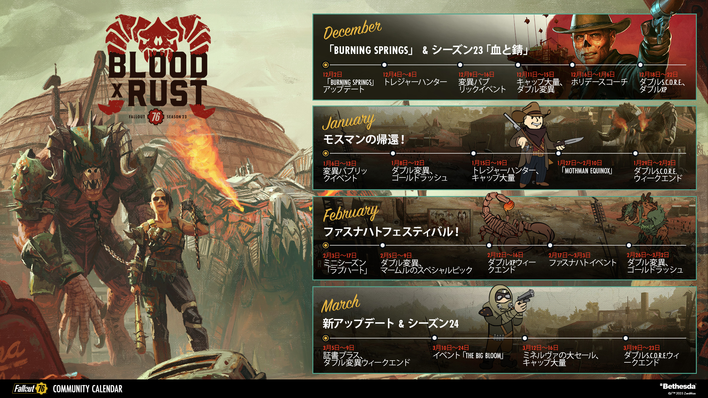
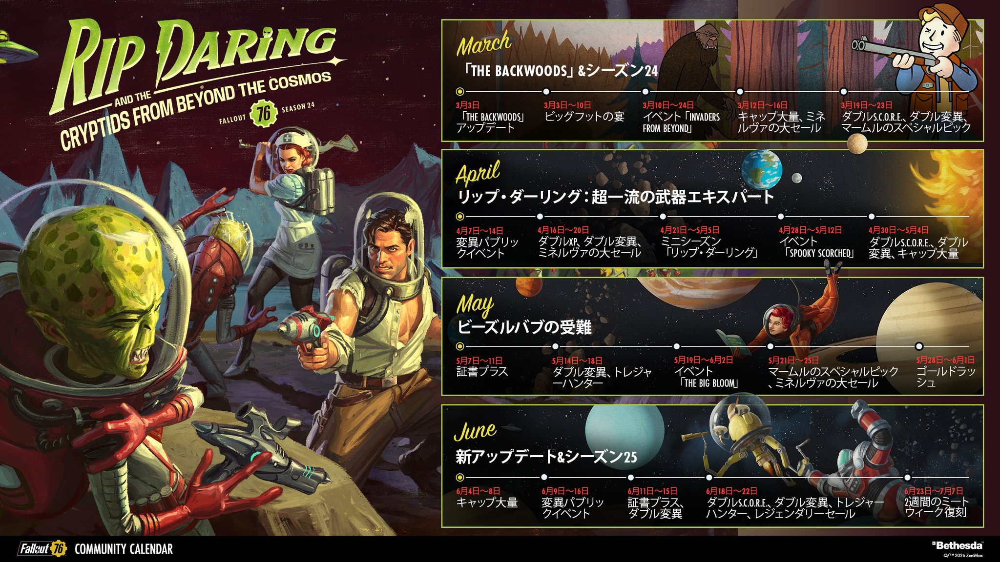

ビッグフット（サスクワッチ）をテーマにした新シーズン。クリプティッズ生物とコスミックホラーが融合した世界観が展開される予定です。

※ 開催時期は例年の傾向。年により前後する場合があります。
| 時期 | イベント名 | 概要 |
|---|---|---|
| 2月 |
Fasnacht Day ■ 開催中 |
ヘルヴェティアの祭りパレードに参加。レアマスクや衣装が報酬として入手できる年1回の限定イベント。 |
| 3月上旬 | Bigfoot's Bash NEW | シーズン24の新イベント。ビッグフット（サスクワッチ）をテーマにした祝祭系イベント。詳細は3月3日以降公開予定。 |
| 3月中旬 | Invaders from Beyond | アパラチア全域にエイリアンが襲来する大規模戦闘イベント。期間中はエイリアン専用報酬が入手可能。 |
| 4月 | Mothman Equinox | ポイント・プレザントで賢きモスマンを召喚する儀式イベント。モスマン関連の限定報酬を入手するチャンス。 |
| 7〜8月 | Meat Week（グラハムのミートクック） | グラハムが主催するバーベキュー大会。プライム・ミートを集め、週替わりの前哨戦をクリアすることで報酬獲得。 |
| 随時 | Treasure Hunter | 宝の地図を持ったレジェンダリー・モールマイナーを探して報酬を奪うイベント。期間中は周回推奨。 |
| 12月 | Holiday Scorched | サンタ姿のスコーチドを倒してギフトを集める年末恒例イベント。限定コスチュームや装飾品が報酬。 |